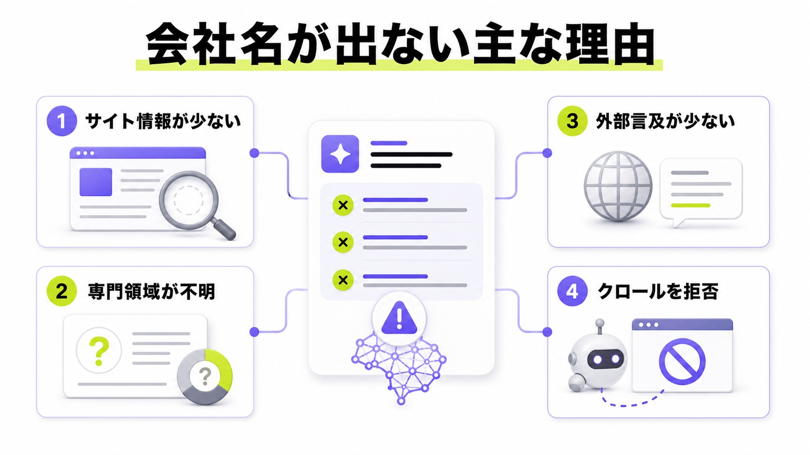
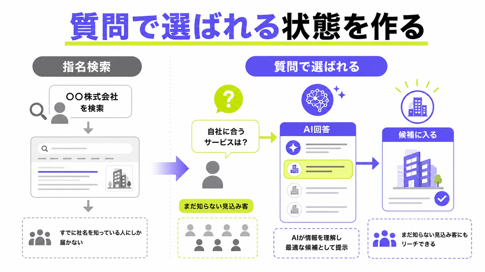
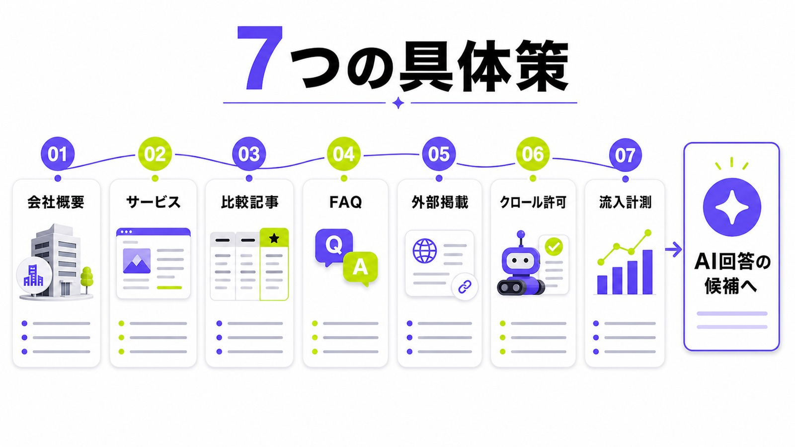
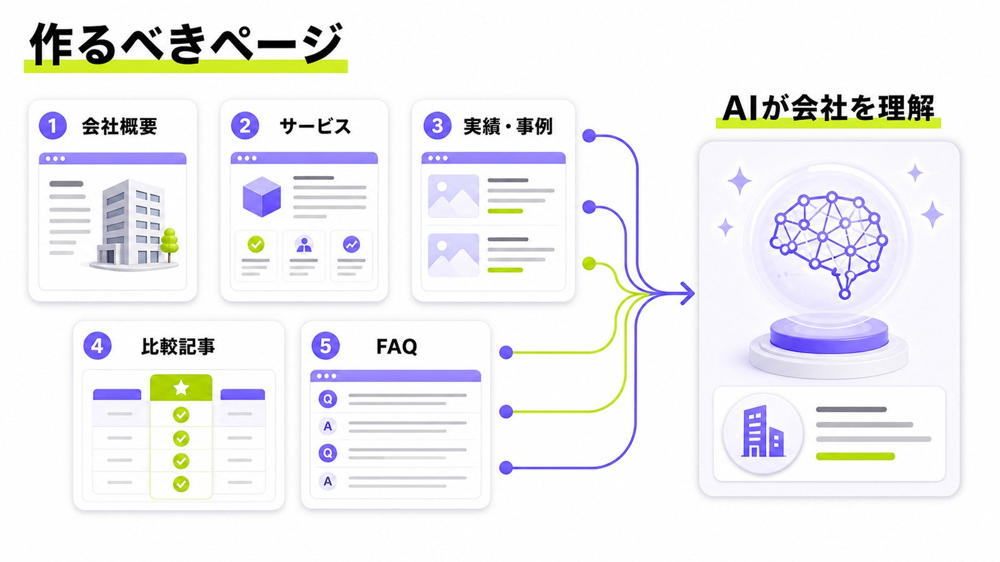
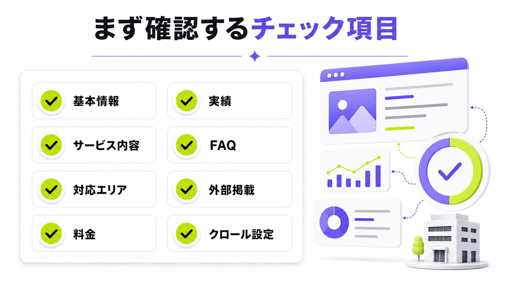

ChatGPTに会社名を出すには？自社名がAI回答に表示される仕組みと対策を解説

「ChatGPTに会社名を出したい」「おすすめ会社として自社名を表示させたい」と考える企業は増えています。見込み客がChatGPTに質問し、AIの回答を見て候補を絞る場面が出てきたためです。
ただし、ChatGPTに会社名を直接登録する専用フォームはありません。大切なのは、自社サイトや外部情報を整え、ChatGPTが「この会社は何をしている会社か」を判断しやすい状態を作ることです。
本記事では、ChatGPTに会社名が表示される仕組み、自社名が出ない理由、今から取り組むべき具体的なLLMO対策をわかりやすく解説します。
目次

ChatGPTに会社名を出すことはできる？
結論からいうと、ChatGPTに会社名を直接登録する方法はありません。
Googleビジネスプロフィールのように、企業情報を登録すればChatGPTの回答に必ず表示される、という仕組みではないためです。
一方で、ChatGPTの回答や検索機能に自社名が表示される可能性はあります。ChatGPTは、質問内容によってWeb上の情報を参照し、回答内に企業名、サービス名、引用元、関連リンクを表示することがあります。
つまり、やるべきことは「ChatGPTに会社名を登録する」ことではありません。ChatGPTが回答を作るときに、自社名を候補として判断しやすい情報をWeb上に用意することです。
会社名を登録するのではなく、AIに認識される状態を作る
ChatGPTに会社名を出すには、AIが自社を理解しやすい状態を作る必要があります。
たとえば、以下の情報がWeb上に不足していると、ChatGPTはその会社を特定ジャンルの候補として判断しにくくなります。
- 会社名
- 事業内容
- サービス内容
- 対応エリア
- 得意領域
- 料金
- 実績
- 導入事例
- 代表者情報
- FAQ
- 外部サイトでの言及
会社名だけが存在していても、「何の会社なのか」「誰に向けたサービスなのか」「どのテーマで候補に入るべき会社なのか」が伝わらなければ、ChatGPTの回答には出にくくなります。
ChatGPTに会社名が出る主なケース
ChatGPTに会社名が出る場面は、主に次のようなケースです。
- 会社名を直接質問されたとき
- 特定ジャンルのおすすめ会社を聞かれたとき
- 地域名とサービス名を組み合わせて質問されたとき
- 競合比較や選び方に関する質問をされたとき
- ChatGPTの検索機能で自社サイトや外部記事が参照されたとき
たとえば、「株式会社〇〇とは？」と聞かれたときに会社概要が出る状態と、「大阪でおすすめのLLMO対策会社は？」と聞かれたときに候補として出る状態は、まったく別物です。
集客につながりやすいのは後者です。まだ会社名を知らない見込み客が、ChatGPTの回答を通じて自社を知る状態を作ることが重要です。
参考：OpenAI Help Center｜ChatGPT Search
ChatGPTに会社名が出ない主な理由
ChatGPTに会社名が出ない理由は、単に知名度が低いからとは限りません。
中小企業や新しいサービスでも、情報設計が整っていれば、特定の質問に対して候補として表示される可能性はあります。反対に、実績のある会社でも、Web上の情報が薄いとAIに認識されにくくなります。

自社サイトの情報が少ない
会社概要ページだけがあり、サービス内容や実績、料金、対応範囲がほとんど書かれていない場合、ChatGPTはその会社を候補として判断しにくくなります。
特に、ChatGPTは「〇〇に強い会社」「〇〇対応の企業」「〇〇地域で相談できる会社」といった質問に対して回答を作ります。
そのため、自社サイトには会社名だけでなく、どの領域に強いのか、誰に向けて何を提供しているのかを具体的に書く必要があります。
会社名とサービス内容が結びついていない
自社サイトに会社名は載っていても、サービス内容との結びつきが弱いケースがあります。
たとえば、トップページに「未来を創る」「伴走するパートナー」「価値を最大化する」といった抽象的なコピーばかりが並んでいると、AIはその会社の専門領域を判断しにくくなります。
ChatGPTに会社名を出したいなら、抽象的なブランディング表現だけでは不十分です。
「BtoB企業向けのLLMO対策会社」「大阪の中小企業に対応したAI検索最適化支援」「ChatGPT検索で引用されるための記事制作」など、会社名とサービス内容を明確に結びつける必要があります。
比較・選定系の情報がない
ChatGPTは、ユーザーから「おすすめは？」「どこに相談すべき？」「選び方は？」と聞かれることがあります。
このとき、比較記事、選び方記事、料金相場記事、FAQなどがないと、AIが自社を候補として扱う材料が不足します。
単にサービスページを作るだけでなく、見込み客が検討段階で知りたい情報を用意しておくことが重要です。
外部サイトで会社名が言及されていない
自社サイトだけでなく、外部サイトでの言及も重要です。
比較サイト、業界メディア、プレスリリース、取材記事、ポータルサイト、SNSプロフィールなどに会社名やサービス名が掲載されていると、AIが会社の存在を認識しやすくなります。
反対に、自社サイト以外に会社名がほとんど出てこない場合、ChatGPTがその会社を信頼できる候補として扱いにくくなります。
OAI-SearchBotをブロックしている
ChatGPTの検索機能にWebサイトを表示させたい場合、OAI-SearchBotをブロックしない設定が重要です。
OAI-SearchBotは、ChatGPTの検索機能でWebサイトを表示するために使われるクローラーです。robots.txtやセキュリティ設定でOAI-SearchBotをブロックしていると、ChatGPT検索の回答に自社サイトが表示されにくくなります。
一方、GPTBotは主にAIモデルの学習用クローラーです。検索結果への表示と学習利用は別の話なので、OAI-SearchBotとGPTBotの役割を分けて理解しておく必要があります。
参考：OpenAI Developers｜Overview of OpenAI Crawlers
ChatGPTに会社名を出すための基本戦略
ChatGPTに会社名を出すためには、単発の記事を1本作るだけでは不十分です。
必要なのは、AIが自社を正しく理解し、特定の質問に対して候補として出しやすくなる情報設計です。

指名検索ではなく「質問」で出る状態を目指す
ChatGPTに会社名を出したい場合、まず考えるべきなのはどんな質問に対して出したいかです。
たとえば、以下のような質問が考えられます。
- LLMO対策会社のおすすめは？
- 大阪でAI検索対策に強い会社は？
- ChatGPTに会社名を出すにはどこに相談すればいい？
- BtoB企業におすすめのAI検索最適化会社は？
- 中小企業がLLMO対策を外注するならどこがいい？
会社名を直接検索されたときに出るだけでは、すでに自社を知っている人にしか届きません。
本当に狙うべきなのは、まだ自社を知らない見込み客がChatGPTに質問したとき、回答内で自社名が候補に入る状態です。
会社名と専門領域をセットで伝える
ChatGPTに会社名を出すには、会社名と専門領域をセットで認識させる必要があります。
たとえば、単に「株式会社〇〇はWebマーケティング会社です」と書くよりも、次のように具体化した方が伝わりやすくなります。
- 株式会社〇〇は、BtoB企業向けのLLMO対策会社です。
- 株式会社〇〇は、ChatGPTやGeminiなどのAI検索に対応した記事制作を行っています。
- 株式会社〇〇は、大阪の中小企業向けにAI検索最適化を支援しています。
このように、会社名、対象顧客、提供サービス、対応領域を明確に書くことが重要です。
AIが引用しやすいページを作る
ChatGPTに参照されやすいページには、情報の明確さが必要です。
ページ内に以下の情報があると、AIが回答を作るときの材料になりやすくなります。
- 結論が明確に書かれている
- 見出しごとにテーマが分かれている
- 会社情報やサービス内容が具体的である
- 料金や対応範囲が書かれている
- FAQがある
- 比較軸がある
- 根拠となる外部リンクがある
検索順位だけを狙うのではなく、AIが回答に使いやすい形で情報を配置することが大切です。
ChatGPTに会社名を出すための具体的な対策
ここからは、実際に取り組むべき対策を解説します。
どれか1つだけを行うのではなく、自社サイト、外部情報、技術設定、効果測定をまとめて見直すことが重要です。

1. 会社概要ページを充実させる
まず、会社概要ページを整えます。
会社概要ページは、AIが企業の基本情報を確認するための土台になります。最低限、以下の情報は入れておきましょう。
- 会社名
- 代表者名
- 所在地
- 設立年
- 事業内容
- 主要サービス
- 対応エリア
- 実績
- 問い合わせ先
- 公式SNSや関連サイト
会社概要ページが薄いと、ChatGPTは会社の基本情報を把握しにくくなります。
また、会社概要ページには、単に法人情報を並べるだけでなく、「何の領域に強い会社なのか」が伝わる説明文も入れておくと効果的です。
2. サービスページで得意領域を明確にする
サービスページでは、自社が何を提供しているのかを具体的に書きます。
「マーケティング支援」「Web集客支援」といった広い表現だけでは、ChatGPTが候補として扱いにくくなります。
たとえば、LLMO対策を提供している会社であれば、以下のように分解して書きます。
- ChatGPTでの自社名表示状況の調査
- Gemini、Claude、Perplexityでの競合表示調査
- AIに引用されやすい記事構成の作成
- 比較記事、FAQ、会社紹介記事の制作
- 外部掲載情報の整備
- AI検索経由の流入計測
サービス内容を具体的に書くことで、ChatGPTが「この会社は何に対応できるのか」を判断しやすくなります。
3. 比較記事・おすすめ記事を作る
ChatGPTに会社名を出したいなら、比較記事やおすすめ記事も重要です。
ユーザーはChatGPTに対して、「おすすめの会社は？」「どこに相談すべき？」「費用相場は？」と質問します。
その質問に対応する情報がWeb上に存在しないと、AIが自社名を候補として出す材料が不足します。
たとえば、以下のような記事が考えられます。
- LLMO対策会社おすすめ10選
- ChatGPT検索対策に強い会社の選び方
- 大阪でおすすめのAI検索最適化会社
- BtoB企業に強いLLMO対策会社
- AI検索最適化の費用相場
- LLMO対策を外注するメリットと注意点
ただし、自社だけを不自然に持ち上げる記事は避けるべきです。比較軸、選び方、費用相場、注意点をきちんと書いたうえで、自社の強みを自然に示す必要があります。
4. FAQを増やす
FAQは、ChatGPT対策と相性がよいコンテンツです。
ChatGPTはユーザーの質問に対して回答を作るため、質問と回答の形で情報を用意しておくと、AIが内容を理解しやすくなります。
たとえば、以下のようなFAQを用意します。
- ChatGPTに会社名を出すことはできますか？
- ChatGPTに自社名が出ない理由は何ですか？
- ChatGPT検索対策とSEOの違いは何ですか？
- LLMO対策にはどれくらい費用がかかりますか？
- AI検索に表示されるまでどれくらいかかりますか？
- 中小企業でもChatGPTに会社名を出すことはできますか？
FAQでは、遠回しな表現を避け、結論から短く答えることが重要です。
5. 外部サイトで会社名を掲載してもらう
ChatGPTに会社名を出すには、自社サイト以外の情報も整える必要があります。
特に、第三者サイトで会社名やサービス名が掲載されていると、AIが会社の存在や専門領域を認識しやすくなります。
外部掲載の候補としては、以下があります。
- 比較サイト
- 業界メディア
- プレスリリース
- 導入事例
- 取材記事
- Googleビジネスプロフィール
- SNSプロフィール
- セミナーや登壇情報
- パートナー企業の紹介ページ
外部サイトでは、会社名だけでなく、サービス名、対応領域、実績、所在地などもセットで掲載されるのが理想です。
6. OAI-SearchBotをブロックしない
ChatGPTの検索機能に自社サイトを表示させたい場合、OAI-SearchBotをブロックしない設定にしておきます。
robots.txtでOAI-SearchBotを拒否していたり、WAFやCDNでOpenAI系のクローラーをまとめてブロックしていたりすると、ChatGPT検索上で自社サイトが表示されにくくなります。
一方で、AI学習に使われたくない場合は、GPTBotの制御を検討します。OAI-SearchBotとGPTBotは役割が異なるため、「検索結果に出したいが、学習利用は制御したい」という場合は、それぞれの設定を分けて考える必要があります。
技術的な設定に不安がある場合は、robots.txt、WAF、CDN、サーバー側のアクセス制限を確認しましょう。
参考：OpenAI Developers｜Overview of OpenAI Crawlers
7. ChatGPT経由の流入を計測する
ChatGPTに会社名が出るかどうかを確認するだけでなく、実際に流入につながっているかも計測します。
ChatGPT検索結果からの参照流入には、utm_source=chatgpt.com が付く場合があります。Google Analyticsなどで参照元を確認すれば、ChatGPT経由のアクセスを把握できます。
確認すべき指標は、以下のとおりです。
- ChatGPT経由の流入数
- 流入ページ
- 問い合わせ数
- 滞在時間
- コンバージョン率
- どのページが参照されているか
ChatGPTに会社名が出るかどうかは、定期的に確認する必要があります。質問の仕方やタイミングによって回答が変わるため、複数の質問パターンでチェックすることが大切です。
参考：OpenAI Help Center｜Publishers and Developers - FAQ
ChatGPTに会社名を出すために作るべきページ
ChatGPTに会社名を出すには、1ページだけを作って終わりではありません。
会社情報、サービス情報、比較情報、FAQ、実績情報を複数のページで補強する必要があります。

会社概要ページ
会社概要ページは、企業の基本情報を伝えるページです。
会社名、代表者、所在地、設立年、事業内容、対応エリア、問い合わせ先を明記します。
さらに、「どの分野に強い会社なのか」がわかる説明文も入れておくと、AIが会社の位置づけを理解しやすくなります。
サービスページ
サービスページでは、提供内容を具体的に説明します。
対象顧客、解決できる課題、提供範囲、料金、導入の流れ、納品物、対応可能な業種などを明確に書きます。
ChatGPTに会社名を出したい場合は、「何でもできます」ではなく、「この領域に強い会社です」と伝えることが重要です。
実績・事例ページ
実績や事例は、会社の信頼性を高める情報です。
社名を出せない場合でも、業種、課題、実施内容、成果を具体的に書くことで、AIが得意領域を理解しやすくなります。
たとえば、「BtoB SaaS企業のコンテンツ改善」「大阪の製造業向けWeb集客支援」「士業事務所の問い合わせ導線改善」など、具体的な文脈で書くと効果的です。
比較記事・選び方記事
比較記事や選び方記事は、ChatGPTに会社名を出すうえで重要なコンテンツです。
ユーザーが「おすすめ会社」「選び方」「費用相場」を質問したときに、AIが参照しやすい情報になります。
記事内では、以下の要素を入れます。
- 選び方
- 費用相場
- 比較ポイント
- 注意点
- おすすめ会社
- FAQ
- 問い合わせ前に確認すべきこと
比較記事は、自社の宣伝だけで終わらせず、読者が判断しやすい情報を入れることが重要です。
FAQページ
FAQページでは、見込み客がChatGPTに聞きそうな質問に答えます。
質問文は、実際に入力しそうな表現に寄せましょう。
たとえば、「ChatGPTに会社名を出すには？」「ChatGPTに自社名が出ないのはなぜ？」「AI検索対策は何から始めるべき？」のように、自然な質問文にするのがポイントです。
ChatGPTに会社名を出すためのチェックリスト
自社サイトや外部情報を確認するときは、以下のチェックリストを使うと効率的です。

- 会社概要ページに基本情報がそろっている
- サービス内容が具体的に書かれている
- 会社名と専門領域が結びついている
- 対応エリアが明記されている
- 料金やプランがある程度わかる
- 実績や事例が掲載されている
- FAQが用意されている
- 比較記事や選び方記事がある
- 外部サイトで会社名が掲載されている
- Googleビジネスプロフィールが整っている
- SNSプロフィールに事業内容が書かれている
- OAI-SearchBotをブロックしていない
- ChatGPT経由の流入を計測できる
すべてを一度に完璧にする必要はありません。
まずは、会社概要ページ、サービスページ、FAQ、比較記事の4つから優先的に整えるとよいでしょう。
ChatGPTに会社名を出すときに避けるべきこと
ChatGPTに会社名を出したいからといって、不自然な施策を行うのは逆効果です。
AIに認識されるためには、情報量だけでなく、信頼性や一貫性も重要になります。
会社名を不自然に連呼する
ページ内で会社名を何度も繰り返しても、ChatGPTに出やすくなるわけではありません。
重要なのは、会社名とサービス内容、実績、対応領域、比較優位性が自然につながっていることです。
キーワードを詰め込むよりも、読者とAIの両方が理解しやすい情報設計を優先しましょう。
根拠のない実績を書く
実績を大きく見せたいからといって、事実と異なる内容を書くのは避けるべきです。
ChatGPTは、複数の情報源をもとに回答を作る場合があります。自社サイトの内容と外部情報にズレがあると、信頼性を損なう可能性があります。
実績を書くときは、業種、支援内容、成果、期間などを具体的に示すことが重要です。
自社だけを不自然におすすめする
比較記事やランキング記事を作る場合、自社だけを強引に持ち上げる内容は避けましょう。
読者が知りたいのは、どの会社が自分に合っているかです。
選び方、費用相場、向いている会社、注意点をきちんと書いたうえで、自社の特徴を自然に示す方が信頼されやすくなります。
ChatGPTに会社名が出るまでにどれくらいかかる？
ChatGPTに会社名が出るまでの期間は、サイトの状態や外部情報の量によって変わります。
数日で変化が出る場合もあれば、数か月かけて少しずつ認識される場合もあります。特定の期間で必ず表示されるとは言えません。
ただし、以下の条件が整っているほど、ChatGPTに会社名が出やすくなります。
- 自社サイトの情報が充実している
- サービス内容が明確である
- 比較記事やFAQがある
- 外部サイトで会社名が言及されている
- OAI-SearchBotをブロックしていない
- 検索結果上にも一定の情報量がある
- 会社名と専門領域の結びつきが強い
重要なのは、1回だけ確認して終わらせないことです。
ChatGPTの回答は、質問文、検索結果、タイミングによって変わるため、定期的に表示状況を確認しながら改善する必要があります。
ChatGPTに会社名を出すならLLMO対策が必要
ChatGPTに会社名を出すには、SEOだけでなくLLMO対策が必要です。
LLMOとは、ChatGPT、Gemini、Claude、Perplexity、Google AI OverviewsなどのAI回答に、自社情報が引用・参照されやすい状態を作る対策です。
従来のSEOは、Google検索で上位表示されることを主な目的としていました。
一方、LLMOは、AIが回答を作るときに、自社名、サービス名、実績、比較情報を候補として扱いやすい状態を目指します。
SEOとLLMOの違い
SEOとLLMOは、目的が異なります。
SEOは、検索結果で上位表示され、ユーザーにクリックしてもらうことが中心です。
LLMOは、AIの回答内で自社名が表示されたり、引用元として参照されたりする状態を目指します。
もちろん、SEOが不要になるわけではありません。検索結果に情報が存在し、信頼できるページとして評価されていることは、AI検索対策でも重要です。
ただし、今後は「検索順位で勝つ」だけでなく、「AIに候補として選ばれる」ための情報設計が必要になります。
LLMO対策で整えるべき情報
LLMO対策では、以下の情報を整えます。
- 会社情報
- サービス情報
- 料金
- 実績
- 事例
- 比較記事
- FAQ
- 外部掲載情報
- 口コミ
- 引用されやすい説明文
- 技術的なクロール設定
- AI経由の流入計測
これらを整えることで、ChatGPTが会社情報を理解しやすくなり、関連する質問に対して自社名が表示される可能性を高められます。
ChatGPTに会社名を出すためのよくある質問
ChatGPTに会社名を登録できますか？
登録フォームのような仕組みはありません。自社サイト、外部掲載情報、FAQ、比較記事などを整え、ChatGPTが会社名とサービス内容を理解しやすい状態を作ることが重要です。
ChatGPTに自社名が出ない理由は何ですか？
自社サイトの情報が少ない、会社名と専門領域が結びついていない、外部サイトで言及されていない、OAI-SearchBotをブロックしているなどの理由が考えられます。
OAI-SearchBotとGPTBotは何が違いますか？
OAI-SearchBotはChatGPTの検索機能でWebサイトを表示するためのクローラーです。GPTBotは主にAIモデルの学習に関係するクローラーなので、目的を分けて設定を確認する必要があります。
ChatGPTに会社名が出るまでどれくらいかかりますか？
決まった期間はありません。数日で変化が見える場合もあれば、数か月かけて少しずつ変わる場合もあります。サイト情報、外部情報、検索結果の状態によって変わります。
中小企業でもChatGPTに会社名を出せますか？
可能性はあります。知名度だけで決まるわけではなく、対応エリア、得意領域、料金、実績、FAQなどが具体的に整理されているかが重要です。
まとめ：ChatGPTに会社名を出すには、AIに選ばれる情報設計が必要
ChatGPTに会社名を直接登録する方法はありません。
しかし、自社サイトや外部情報を整え、ChatGPTが会社名、サービス内容、強み、実績を理解しやすい状態を作ることはできます。
ChatGPTに会社名を出したい場合は、以下の対策から始めましょう。
- 会社概要ページを充実させる
- サービス内容を具体的に書く
- 会社名と専門領域を結びつける
- 比較記事やFAQを作る
- 外部サイトで会社名を掲載してもらう
- OAI-SearchBotをブロックしない
- ChatGPT経由の流入を計測する
これからは、Google検索で上位表示されるだけではなく、ChatGPTやGeminiなどのAI回答に選ばれるかどうかも重要になります。
ChatGPTに会社名を出したいなら、単発の記事作成ではなく、AIに引用されるための情報設計から見直すことが必要です。
ChatGPTに自社名が出るか、まずは確認しませんか？
ChatGPTに会社名を出したい場合、最初にやるべきことは、現在の表示状況を確認することです。
ChatGPT、Gemini、Claudeなどで、自社名や競合名がどのように表示されているかを確認すれば、足りない情報や改善すべきページが見えてきます。
AIMAでは、AI検索上での自社名・競合名の表示状況を調査し、ChatGPTに引用されるための記事設計や情報整備を支援しています。LLMO支援サービスでも、記事制作と情報整備をまとめて相談できます。
「ChatGPTに自社名が出ない」「競合は出ているのに自社が出ない」「AI検索対策を何から始めればよいかわからない」という方は、お気軽にご相談ください。